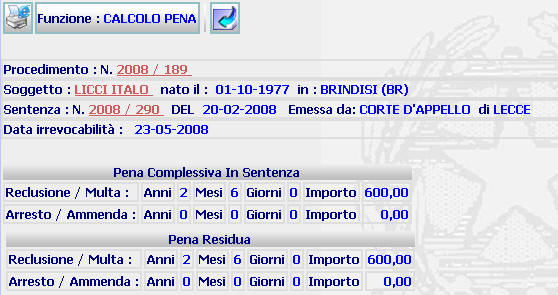

CALCOLO PENA: La funzione calcola e acquisisce a sistema, detraendo l'eventuale presofferto, la pena residua da espiare. Tale funzione va obbligatoriamente eseguita prima dell'emissione del primo provvedimento del PM.
LE MASCHERE VIDEO
La funzione CALCOLO PENA viene realizzata attraverso la maschera seguente nella quale compare la pena residua calcolata dal sistema

COME FARE PER ...
Per tornare ai dati del fascicolo
trattato cliccare sul pulsante

PULSANTI
Oltre ai
pulsanti orizzontali della maschera principale è presente il pulsante
 di stampa del contesto (videata)
di stampa del contesto (videata) facenti parte del gruppo di
pulsanti di "Uso Comune"
facenti parte del gruppo di
pulsanti di "Uso Comune"
BOTTONI
Oltre ai comandi funzionali relativi al menù verticale non sono presenti altri comandi
CONTROLLI
Se il sistema rileva che l'espiazione è in corso (es.: custodia cautelare in corso), avvia in automatico la procedura di calcolo del fine pena. Il Fine Pena calcolato dal sistema viene proposto all'operatore per la Validazione Pena